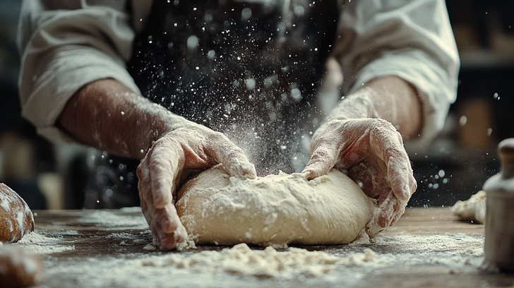
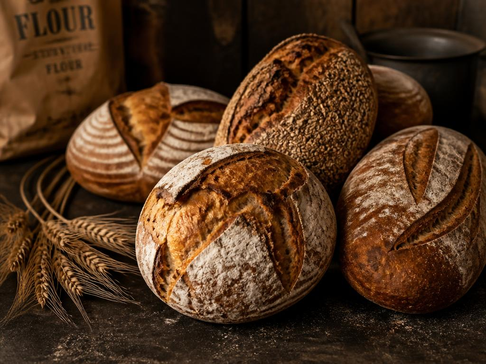
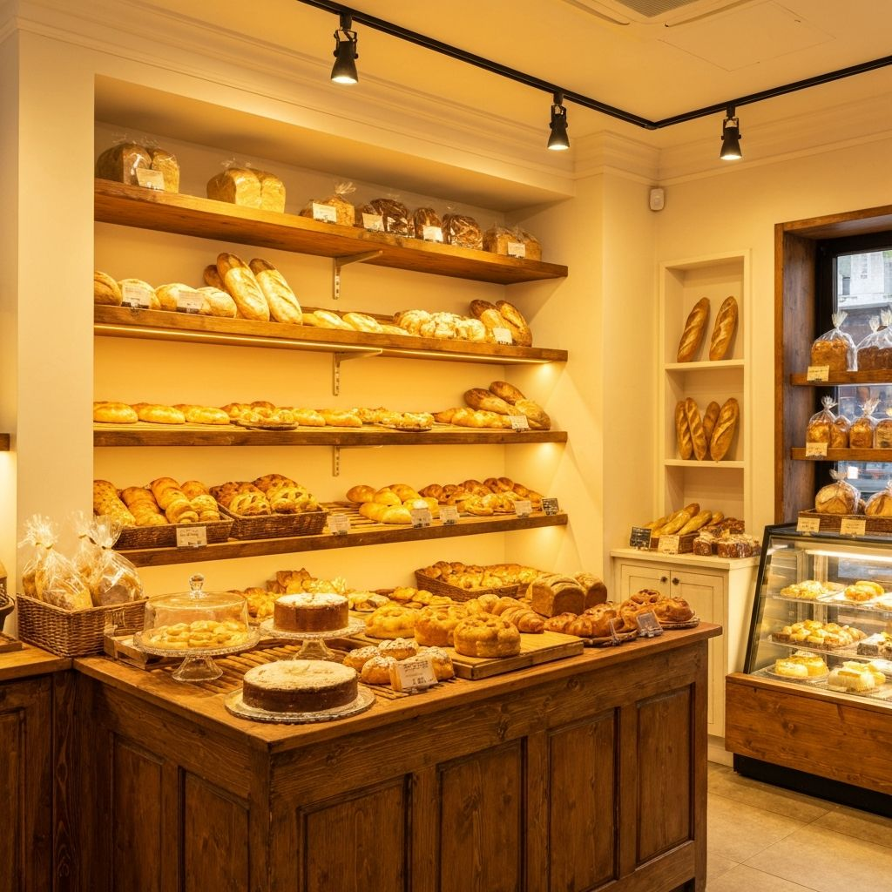
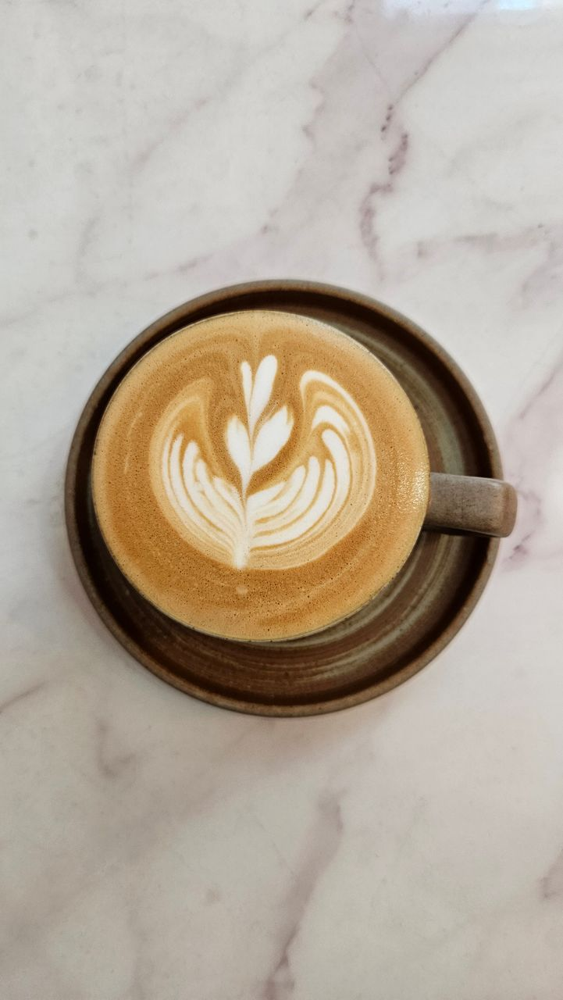

King's Lynn · West Norfolk
Baked from scratch,
every single morning.
Artisan sourdough, flaky pastries and proper cakes — mixed, proved and baked by hand in our High Street bakery. Then served with traditional table service, the way a café should be.

never bought in
Our Craft
Flour, water, salt —
and a little Norfolk patience.
Norbury's is renowned across West Norfolk for one simple reason: everything in our ovens starts from scratch, in our kitchen, on the morning you eat it. Our sourdough proves slowly overnight for that deep, honest flavour. Our pastry is laminated by hand. Our cakes are the kind your gran would approve of.
Inside you'll find a spotless, relaxed and homely room on the High Street — and proper traditional table service. No booking apps, no QR codes, no fuss. Just sit down, and we'll look after you.
- Sourdough proved 18+ hours for real flavour
- Local Norfolk flour where it matters
- Traditional table service — sit back, relax
Gallery
From our ovens



Visit Us
Pop in & say hello
You'll find us right on the High Street — follow the smell of fresh bread.
Bakery hours
| Wednesday | 9:00am – 4:00pm |
We bake in small batches, so call ahead if you're coming for something special — 01553 762804.
Get in touch
Cake orders, large sourdough orders & friendly chat — all welcome.